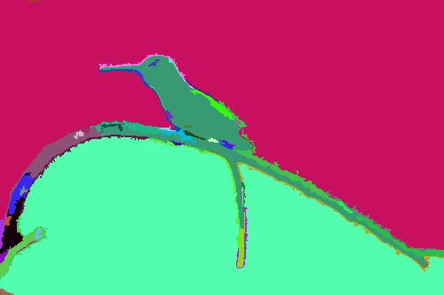
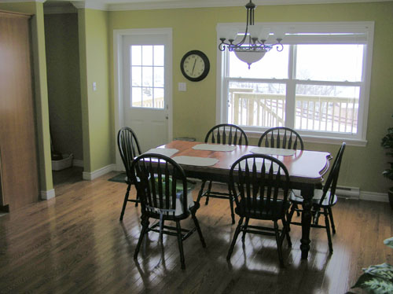
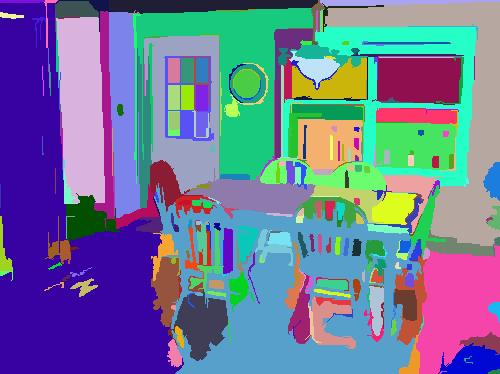

图像分割之图割
学习图像分割，使用属于图割（Graph Cut）方法的Efficient Graph-Based Image Segmentation进行实验。
实验问题
图像分割（Segmentation）1指的是将数字图像细分为多个图像子区域（像素的集合）（也被称作超像素）的过程。
实验环境
操作系统：Ubuntu 14.04.3 LTS
开发环境：gcc v4.8.5
实验过程
这里使用Efficient Graph-Based Image Segmentation2作为本次实验的解决方案。
这篇文章解决了把图像分割成区域的问题。文章定义了一个使用图像的图表示（graph-based）来衡量两个区域边界置信度的预测器，然后设计了一个基于该预测器的有效分割算法，并表明虽然该算法使用贪心决策但它产生的分割满足全局特性。文章使用2种不同的局部邻居的方法来构建图，并阐明真实与合成图像的结果。该算法的运行时间几乎与图的边数目成线性关系，在实验中也很快。该方法的一个重要特征是它能保持在变化较低的图像区域的细节，同时忽略了在变化较高的区域的细节。
相关工作
图像的图表示
图像的图表示是指将图像表达成图论中的图\(G = (V, E)\)。具体来说就是，把图像中的每一个像素点看成一个顶点\(v_i \in V\)，像素点之间的关系对（一般指相邻关系）构成图的一条边\(e_i \in E\)。图k 每条边的权值是基于像素点之间的关系，例如可以为像素点之间的灰度值差。
最小生成树
图像用图表示之后，可以使用最小生成树方法合并像素点，使其构成若干个区域。
相关定义
分割区域（Component）的内部差（Internal difference）
假设图\(G\)已经简化成了最小生成树\(MST(C, E)\)，一个分割区域C包含若干个顶点，顶点之间通过最小生成树的边连接。这个内部差就是指分割区域C中包含的最大边的权值。
\[Int(C) = \max_{e \in MST(C, E)} w(e)\]
分割区域（Component）之间的差别（Difference）
指两个分割区域之间顶点相互连接的最小边的权值。
\[Dif(C_1, C_2) = \min_{v_i \in C_1, v_j \in C_2, (v_i, v_j) \in E} w((v_i, v_j))\]
如果两个分割部分之间没有边连接，定义\(Dif(C_1, C_2) = \infty\)。
分割区域（Component）边界的一种判断标准（predicate）
判断两个分割部分之间的差别\(Dif\)相对于\(MInt\)的大小，这里引入了一个阈值函数\(\tau\) 来控制两者之间的差值。下面给出这个判断标准的定义：
\[D(C_1, C_2) = \begin{cases} \text{true} & \text{if } Dif(C_1, C_2) > MInt(C_1, C_2) \text{false} & \text{otherwise} \end{cases}\]
\[MInt(C_1, C_2) = \min(Int(C_1) + \tau(C_1), Int(C_2) + \tau(C_2))\]
阈值函数\(\tau\)主要是为了更好的控制分割区域边界的定义。比较直观的理解，小分割区域的边界定义要强于大分割区域，否则可以将小分割区域继续合并形成大区域。在这里给出的阈值函数与区域的大小有关。
\[\tau(C) = k / |C|\]
\(|C|\)是指分割部分顶点的个数（或者像素点个数），k是一个参数，可以根据不同的需求（主要根据图像的尺寸）进行调节。
分割\(S\)太精细（too fine）
如果一个分割\(S\)，存在两个分割区域\(C_1, C_2 \in S\)，它们之间没有明显的边界，则称\(S\)太精细。
分割\(S\)太粗糙（too coarse）
如果一个分割\(S\)，一个合适的调整（refinement）\(S’\)使得\(S\)不是太精细，则称\(S\)太粗糙。
对任意一个图，都存在一个分割\(S\)，既不是太精细也不是太粗糙。
算法过程
算法如下所示。
输入： \(n\)个点、\(m\)条边的图\(G = (V, E)\)
输出： \(V\)的分割\(S = (C_1, \cdots, C_r)\)
对于图\(G\)的所有边，按权值进行不下降排序，得到\(\pi = (o_1, \cdots, o_m)\)
\(S^0\)是一个原始分割，相当于每个顶点当做是一个分割区域
重复3的操作\(\text{for} q = 1, \cdots, m\)
根据上次\(S^{q - 1}\)的构建。选择一条边\(o_q(v_i, v_j)\)，如果\(v_i\)和\(v_j\)在分割的互不相交的区域中，比较这条边的权值与这两个分割区域之间的最小分割内部差\(MInt\)，如果\(o_q(vi, vj) < MInt\)，那么合并这两个区域，其他区域不变；否则什么都不做
最后得到的就是所求的分割\(S = S^m\)
算法证明
引理1 上述步骤3中两个通过边连接的互不相交区域，如果它们不合并，则它们将一直保留到最后。
步骤3中的边是这两个区域之间相互连接最小的边，若这条边不允许这两个区域合并，后面权值更大的边更不可能使得这两个区域合并，故这两个区域能够保留到最后。
定理1 通过上述算法得到的分割不是太精细。
对初始化状态\(S^0\)，分割是最精细的。通过算法，把能合并的区域都合并了，得到的区域之间都有明显的分界线，所以不是太精细。
定理2 通过上述算法得到的分割不是太粗糙。
对最后的状态\(S^m\)，能够合并的区域都合并了，不能合并的都保留了下来。如果对于留下来的任意一个区域进行分割，那么必然就导致这两个子区域之间没有明显的分界线，那么这个调整是太精细。显然不存在一个调整不是太精细，故最后得到分割不是太粗糙。
定理3 在上述算法中，相同权值的不同边的顺序不影响最后的结果。
两条边\(e_1, e_2\)涉及四个顶点，只有当涉及到三个区域是对实验结果可能有影响，这里只讨论这种情况。在分割区域\(A\)和\(B\)之间，在分割区域\(B\)和\(C\)之间。对\(e_1\)是否导致\(A\)和\(B\)合并，以及\(e_2\)是否导致\(B\)和\(C\)合并，分类讨论就可以很容易得出上述结论。
算法效率分析
算法使用排序和路径压缩的并查集实现，耗时主要分为两部分：
步骤0的排序，使用常用的排序算法都能够达到\(O(mlog(m))\)。
步骤1-3，时间复杂度为\(O(m\alpha(m))\)，\(\alpha\)是一个非常缓慢增长的Ackerman反函数。
主要的时间都是在第二部分，\(\alpha\)由于是一个增长非常缓慢的函数，所以基本可以认为是一个常数，这也是该算法基本能够与图像像素点数量成线性关系的原因。
算法实现
首先对图像进行一个高斯滤波，这样做可以去掉一些噪声，而又不影响图像的视觉效果。在构建图表示的过程采用四邻域点，即每个像素点与其周边四个像素点之间各构成一条边，边的权值通过计算颜色值的欧式距离衡量。当然也可以先在每个颜色通道进行分割，然后求它们的交，这样会使得分割效果更好（分割的更精细）。阈值函数\(\tau\)的参数\(k\)可以根据图像大小以及需求进行调节。
实验数据集
PASCAL VOC 2012数据集
PASCAL VOC 20123数据集相关地址：http://host.robots.ox.ac.uk/pascal/VOC/voc2012/index.html
PASCAL VOC(Pattern Analysis, Statistical Modelling and Computational learning, Visual Object Classes) 2012指2012年一个视觉对象的分类识别和检测的挑战赛。
挑战的主要目标是识别一些现实场景中的视觉对象类。数据集中有20个分类，分别是：
人：人
动物：鸟、猫、牛、狗、马、羊
交通工具：飞机、自行车、船、公共汽车、汽车、摩托车、火车
室内物体：瓶子、椅子、餐桌、盆栽植物、沙发、电视/显示器
比赛主要分为分类、检测、分割3个部分，这里我们只关注分割比赛。
分割比赛需要对给定的物体分类生成像素级的分割，其它则作为背景。
实验结果
由于这篇文章并没有实现对特定对象的分割，故没办法完成PASCAL VOC 2012中对不同对象进行分割及同一类对象不同实例的分割。
这里选择几张PASCAL VOC 2012中的测试图像，使用这篇文章的分法进行实验。
部分图像及其分割结果如下。
| Original Image | Segmented Image |
|---|---|
 |
|
 |
 |
参考
图像分割. 维基百科. 最后修订于2015年10月20日. https://zh.wikipedia.org/wiki/%E5%9B%BE%E5%83%8F%E5%88%86%E5%89%B2↩︎
Felzenszwalb P F, Huttenlocher D P. Efficient graph-based image segmentation[J]. International Journal of Computer Vision, 2004, 59(2): 167-181.↩︎
Visual Object Classes Challenge 2012 (VOC2012). PASCAL2. http://host.robots.ox.ac.uk/pascal/VOC/voc2012/index.html↩︎